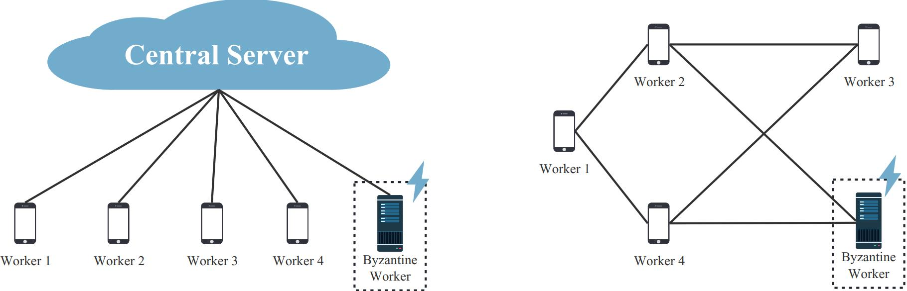

Research
Training on Analog In-memory Computing Hardware
Modern deep model training often requires processing vast amounts of weights and data, which must be transferred between memory and processor, leading to the "von Neumann bottleneck" that can significantly hinder computation speed and efficiency. In this context, Analog in-memory computing (AIMC) is an innovative computing paradigm that utilizes the physical properties of emerging non-volatile memory (NVM) devices to perform computations directly within the memory array. The core concept is to harness the analog storage and processing capabilities of NVM devices to execute matrix-vector multiplication (MVM) operations in a highly parallel and energy-efficient manner.
Training on AIMC hardware, while promising in terms of energy efficiency and speed, faces several significant challenges which comes from hardware imperfection. One major difficulty is the inherent variability and noise in analog hardware, which lead to inaccuracies in computations. Additionally, the precision of analog computations is generally lower than that of digital counterparts, making it harder to achieve the same level of accuracy required for training deep neural networks. Another challenge is the limited endurance and retention of analog memory devices, which can degrade over time and affect the reliability of the training process. Furthermore, integrating analog components with existing digital systems requires sophisticated design and calibration techniques to ensure compatibility and optimal performance.
To address these challenges, my research focuses on developing novel algorithms and techniques that enable effectively train deep neural networks on AIMC hardware.

Distributed Optimization
Distributed or decentralized learning, which involves a series of single devices (workers) collaborating to train a machine learning model, usually serves as a promising solution in the following scenarios:- Accelerate large-scale machine learning through parallel computation in data centers.
- Exploit the potential value of large-volume, heterogeneous, and privacy-sensitive data located at geographically distributed devices in settings like federated learning (FL) or multi-agent reinforcement learning (MARL).

Journals
-
Yue Huang, Zhaoxian Wu, Shiqian Ma, Qing Ling
IEEE Transactions on Signal Processing (TSP), 2025
-
Xingrong Dong, Zhaoxian Wu, Qing Ling, Zhi Tian
IEEE Transactions on Signal Processing (TSP), 2024
Byzantine-Resilient Decentralized Stochastic Optimization with Robust Aggregation Rules
Zhaoxian Wu, Tianyi Chen, Qing Ling
IEEE Transactions on Signal Processing (TSP), 2023
Byzantine-Robust Variance-Reduced Federated Learning over Distributed Non-i.i.d. Data
Jie Peng, Zhaoxian Wu, Qing Ling
Information Sciences, 2022
Communication-censored Distributed Stochastic Gradient Descent
Weiyu Li, Zhaoxian Wu, Tianyi Chen, Liping Li, Qing Ling
IEEE Transactions on Neural Networks and Learning Systems (TNNLS), 2021
Byzantine-resilient Decentralized Policy Evaluation with Linear Function Approximation
Zhaoxian Wu, Han Shen, Tianyi Chen, Qing Ling
IEEE Transactions on Signal Processing (TSP), 2021
Federated Variance-reduced Stochastic Gradient Descent with Robustness to Byzantine Attacks
Zhaoxian Wu, Qing Ling, Tianyi Chen, and Georgios B Giannakis
IEEE Transactions on Signal Processing (TSP), 2020
Conference
Towards Exact Gradient-based Training on Analog In-memory Computing
Zhaoxian Wu, Tayfun Gokmen, Malte J. Rasch, Tianyi Chen
Conference on Neural Information Processing Systems (NeurIPS), 2024
-
Yue Huang, Zhaoxian Wu, Qing Ling
International Conference on Acoustics, Speech, and Signal Processing (ICASSP), 2024
Distributed Online Learning With Adversarial Participants In An Adversarial Environment
Xingrong Dong, Zhaoxian Wu, Qing Ling, Zhi Tian
International Conference on Acoustics, Speech, and Signal Processing (ICASSP), 2023
A Byzantine-resilient Dual Subgradient Method for Vertical Federated Learning
Kun Yuan, Zhaoxian Wu, Qing Ling
International Conference on Acoustics, Speech, and Signal Processing (ICASSP), 2022
Byzantine-resilient Decentralized TD Learning with Linear Function Approximation
Zhaoxian Wu, Han Shen, Tianyi Chen, Qing Ling
International Conference on Acoustics, Speech, and Signal Processing (ICASSP), 2021
Byzantine-resilient Distributed Finite-sum Optimization over Networks
Zhaoxian Wu, Qing Ling, Tianyi Chen, and Georgios B Giannakis
International Conference on Acoustics, Speech, and Signal Processing (ICASSP), 2020